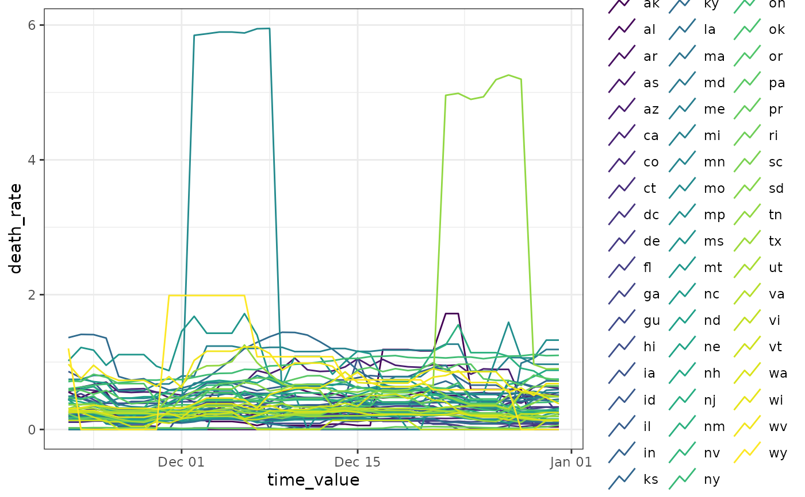
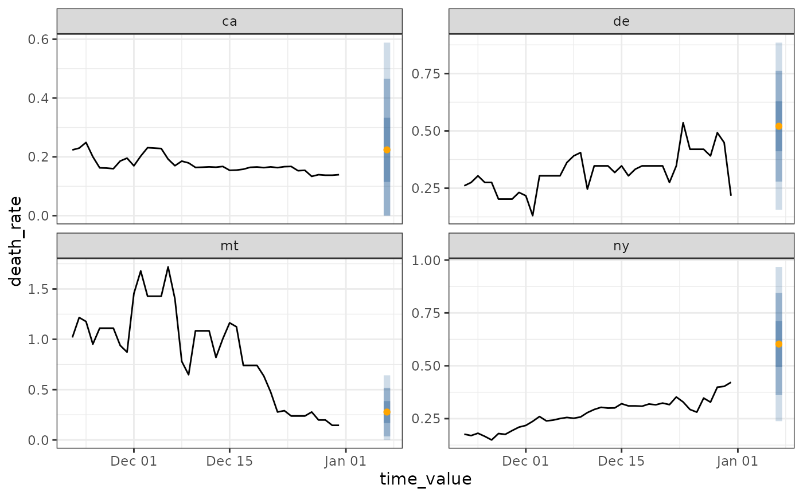
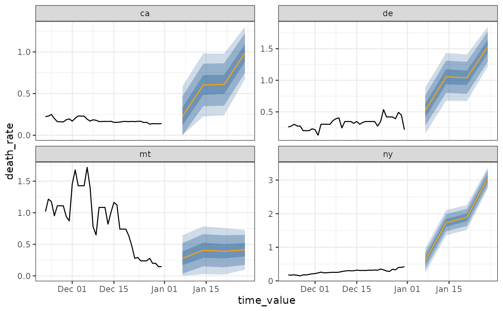
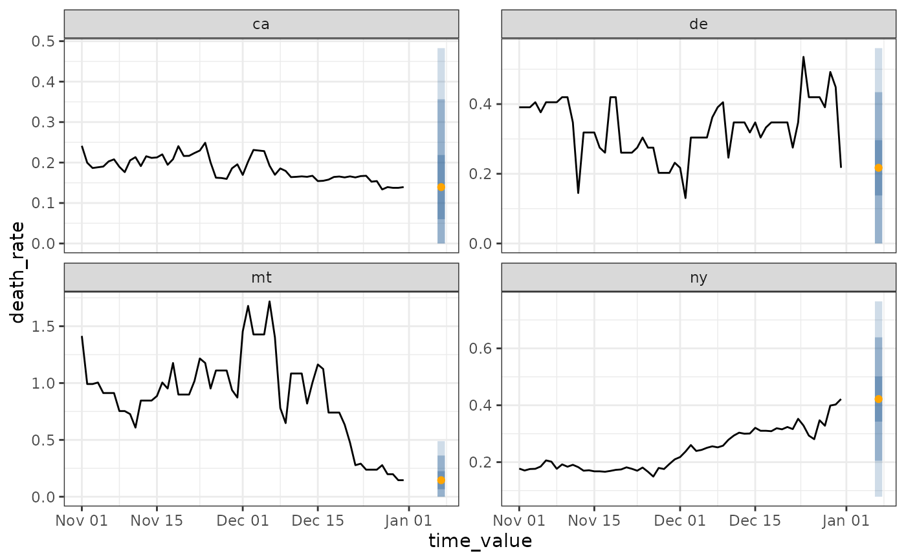
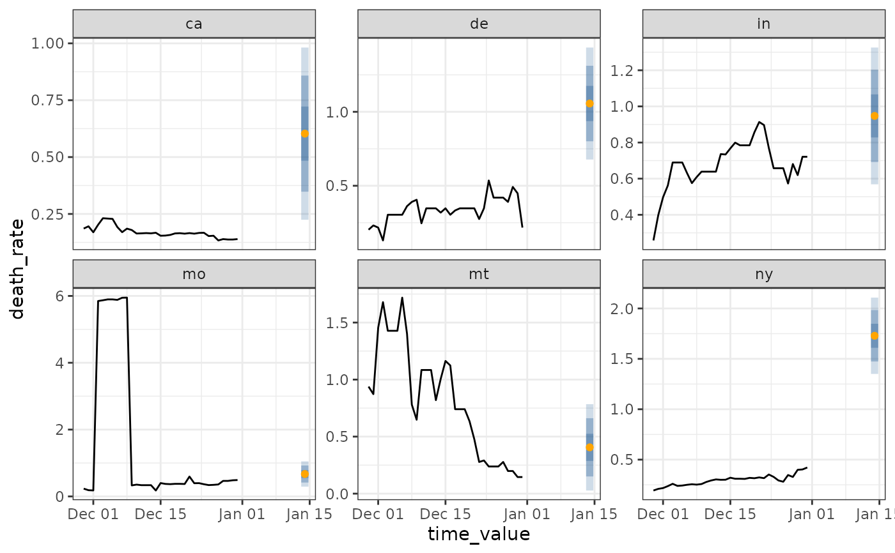

Automatically plot an epi_workflow or canned_epipred object
Source: R/autoplot.R
autoplot-epipred.RdFor a fit workflow, the training data will be displayed, the response by
default. If predictions is not NULL then point and interval forecasts
will be shown as well. Unfit workflows will result in an error, (you
can simply call autoplot() on the original epi_df).
Usage
# S3 method for class 'epi_workflow'
autoplot(
object,
predictions = NULL,
.levels = c(0.5, 0.8, 0.95),
...,
.color_by = c("all_keys", "geo_value", "other_keys", ".response", "all", "none"),
.facet_by = c(".response", "other_keys", "all_keys", "geo_value", "all", "none"),
.base_color = "dodgerblue4",
.point_pred_color = "orange",
.max_facets = Inf
)
# S3 method for class 'canned_epipred'
autoplot(
object,
...,
.color_by = c("all_keys", "geo_value", "other_keys", ".response", "all", "none"),
.facet_by = c(".response", "other_keys", "all_keys", "geo_value", "all", "none"),
.base_color = "dodgerblue4",
.point_pred_color = "orange",
.max_facets = Inf
)Arguments
- object
An
epi_workflow- predictions
A data frame with predictions. If
NULL, only the original data is shown.- .levels
A numeric vector of levels to plot for any prediction bands. More than 3 levels begins to be difficult to see.
- ...
Ignored
- .color_by
Which variables should determine the color(s) used to plot lines. Options include:
all_keys- the default uses the interaction of any key variables including thegeo_valuegeo_value-geo_valueonlyother_keys- any available keys that are notgeo_value.response- the numeric variables (same as the y-axis)all- uses the interaction of all keys and numeric variablesnone- no coloring aesthetic is applied
- .facet_by
Similar to
.color_byexcept that the default is to display the response.- .base_color
If available, prediction bands will be shown with this color.
- .point_pred_color
If available, point forecasts will be shown with this color.
- .max_facets
Cut down of the number of facets displayed. Especially useful for testing when there are many
geo_value's or keys.
Examples
library(dplyr)
jhu <- case_death_rate_subset %>%
filter(time_value >= as.Date("2021-11-01"))
r <- epi_recipe(jhu) %>%
step_epi_lag(death_rate, lag = c(0, 7, 14)) %>%
step_epi_ahead(death_rate, ahead = 7) %>%
step_epi_lag(case_rate, lag = c(0, 7, 14)) %>%
step_epi_naomit()
f <- frosting() %>%
layer_residual_quantiles(
quantile_levels = c(.025, .1, .25, .75, .9, .975)
) %>%
layer_threshold(starts_with(".pred")) %>%
layer_add_target_date()
wf <- epi_workflow(r, linear_reg(), f) %>% fit(jhu)
autoplot(wf)

latest <- jhu %>% filter(time_value >= max(time_value) - 14)
preds <- predict(wf, latest)
autoplot(wf, preds, .max_facets = 4)

# ------- Show multiple horizons
p <- lapply(c(7, 14, 21, 28), function(h) {
r <- epi_recipe(jhu) %>%
step_epi_lag(death_rate, lag = c(0, 7, 14)) %>%
step_epi_ahead(death_rate, ahead = h) %>%
step_epi_lag(case_rate, lag = c(0, 7, 14)) %>%
step_epi_naomit()
ewf <- epi_workflow(r, linear_reg(), f) %>% fit(jhu)
forecast(ewf)
})
p <- do.call(rbind, p)
autoplot(wf, p, .max_facets = 4)

# ------- Plotting canned forecaster output
jhu <- case_death_rate_subset %>%
filter(time_value >= as.Date("2021-11-01"))
flat <- flatline_forecaster(jhu, "death_rate")
autoplot(flat, .max_facets = 4)
#> Warning: Removed 7 rows containing missing values or values outside the scale range
#> (`geom_line()`).

arx <- arx_forecaster(jhu, "death_rate", c("case_rate", "death_rate"),
args_list = arx_args_list(ahead = 14L)
)
autoplot(arx, .max_facets = 6)
